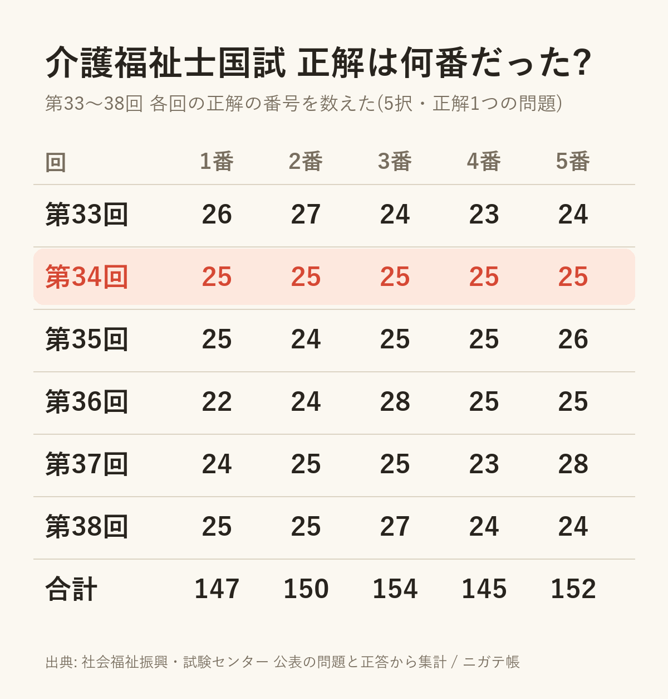
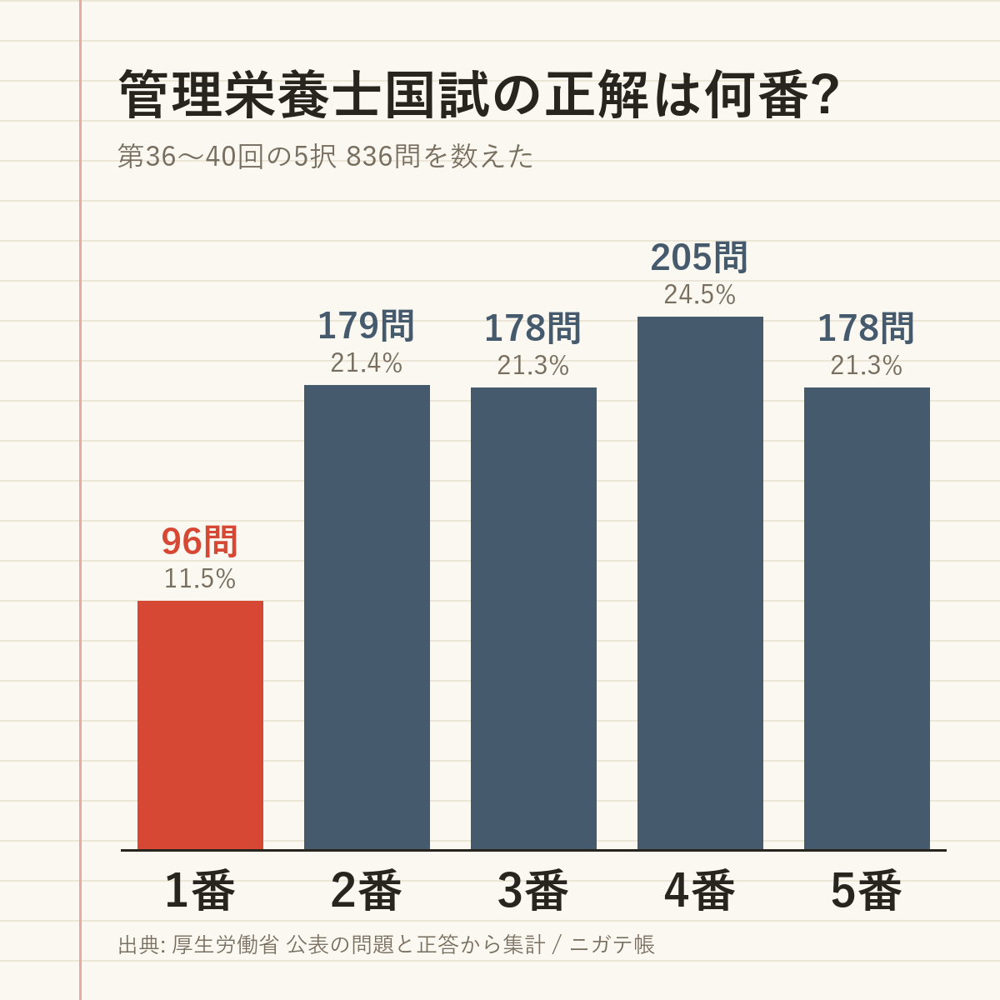
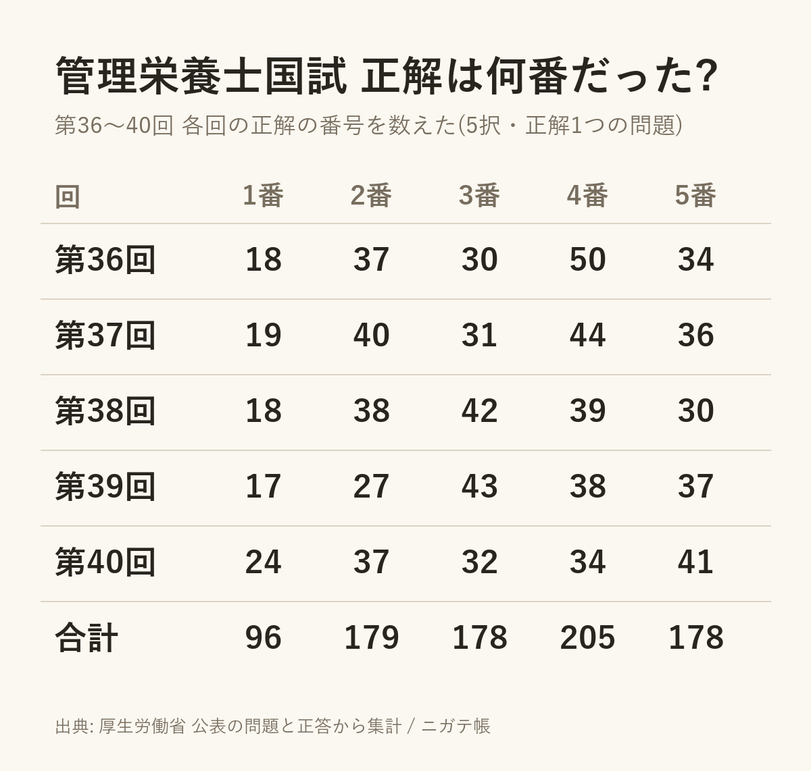
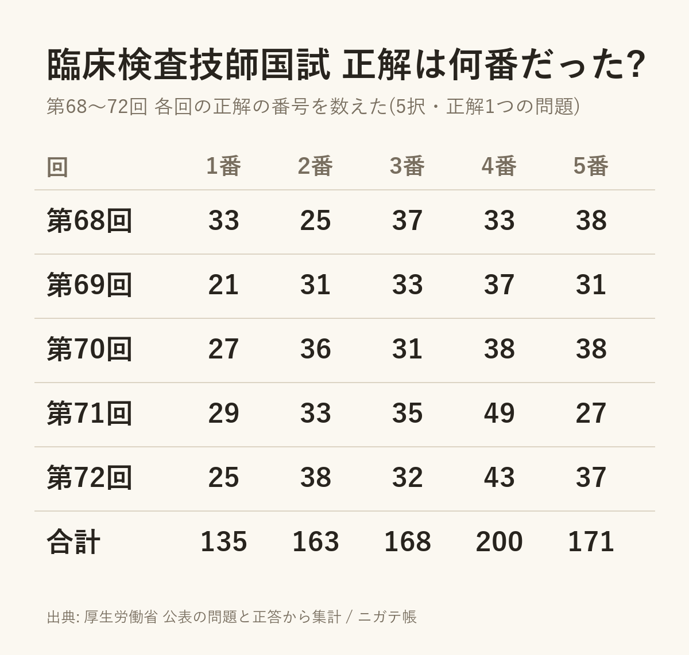
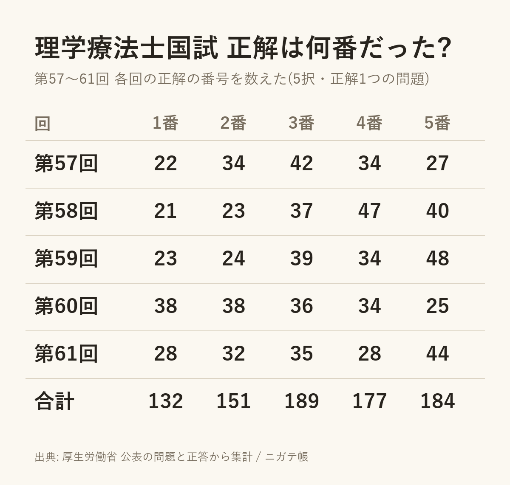

国家試験の「正解の番号」を数えてみた(介護福祉士・管理栄養士・臨床検査技師・理学療法士)
2026-10-07 ・ @apkderete
過去問アプリを作っていると、問題と正答のデータが手元にそろいます。せっかくなので、正解が何番だったかを数えてみました。対象は5択で正解が1つの問題だけです。問題と正答は、社会福祉振興・試験センターと厚生労働省が公表しているものを使っています。
先に言っておくと、これは勉強法の話ではありません。わからない問題で「何番にするか」の参考にもならないと思います。ただ、試験ごとにこんなに違うのかと驚いたので、そのまま載せます。
介護福祉士は、きれいに散らしてある
第33回から第38回までの6回分を数えました。いちばん目を引いたのは第34回で、125問のうち1番から5番までが、ちょうど25問ずつでした。

ほかの回も、どの番号も22問から28問のあいだに収まっています。偶然でここまで揃うことはまずないので、問題を作る側が正解の番号を均等に散らしているのだと思います。
よく「3番が続いたから次は違う番号だろう」と考えてしまいますが、介護福祉士では回全体で数が揃うようにしてあるだけで、続くこと自体はあります。数えた範囲では、同じ番号が続いたのは最長3問でした。
管理栄養士は、1番が少ない
同じ数え方で、管理栄養士の第36回から第40回、5択836問を数えました。こちらは様子が違って、正解が1番の問題が96問(11.5%)しかありません。ほかの番号は178問から205問です。

回ごとに見ても、どの回も1番がいちばん少なくなっていました。第36回は1番が18問に対して4番が50問です。

管理栄養士は、同じ番号が5問続けて正解になっている所もありました。第36回の午前22〜26問はすべて5番、第39回の午後173〜177問はすべて3番です。介護福祉士とは作り方がかなり違うようです。
臨床検査技師と理学療法士
臨床検査技師(第68〜72回、837問)は、1番が135問(16.1%)で少なめ、4番が200問(23.9%)で多めでした。

理学療法士(第57〜61回、833問)も1番が132問(15.8%)で少なめです。ただ回ごとのばらつきが大きく、第60回は1番と2番がどちらも38問で、むしろ多い回でした。

数え方について
数えたのは、各試験の5択で正解が1つの問題です。正答が公表されなかった問題や、正解が2つある問題は除いています。数字は、アプリに入れている問題データから数えたもので、私の入力に誤りがある可能性はあります。気づいたことがあれば X(@apkderete)で教えてください。
問題そのものを解きたい人のために、各試験の最新の回を1問ずつ、正答と解説つきで置いています。
介護福祉士 第38回 / 管理栄養士 第40回 / 臨床検査技師 第72回 / 理学療法士 第61回 / 社会福祉士 第38回
解説は私が書いたもので、試験センターや厚生労働省とは関係ありません。過去問アプリ「ニガテ帳」は、間違えた問題だけが残り、2回続けて正解すると消える作りにしています。